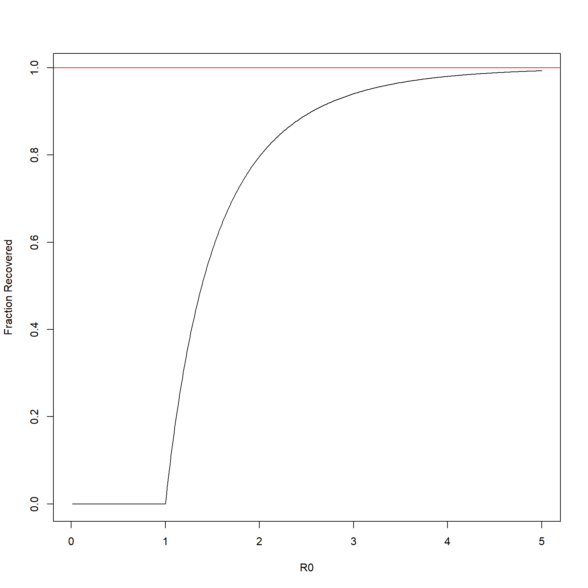
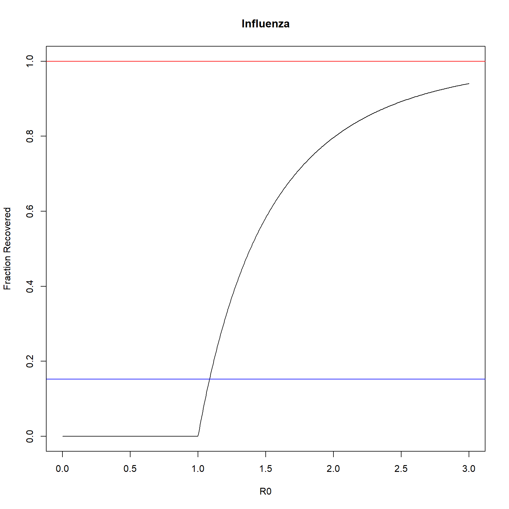

Homework4
KiseokUChicago
2021-02-10
Last updated: 2021-02-16
Checks: 7 0
Knit directory: Theoretical_ecology_HW/
This reproducible R Markdown analysis was created with workflowr (version 1.6.2). The Checks tab describes the reproducibility checks that were applied when the results were created. The Past versions tab lists the development history.
Great! Since the R Markdown file has been committed to the Git repository, you know the exact version of the code that produced these results.
Great job! The global environment was empty. Objects defined in the global environment can affect the analysis in your R Markdown file in unknown ways. For reproduciblity it’s best to always run the code in an empty environment.
The command set.seed(20210122) was run prior to running the code in the R Markdown file. Setting a seed ensures that any results that rely on randomness, e.g. subsampling or permutations, are reproducible.
Great job! Recording the operating system, R version, and package versions is critical for reproducibility.
Nice! There were no cached chunks for this analysis, so you can be confident that you successfully produced the results during this run.
Great job! Using relative paths to the files within your workflowr project makes it easier to run your code on other machines.
Great! You are using Git for version control. Tracking code development and connecting the code version to the results is critical for reproducibility.
The results in this page were generated with repository version 8746855. See the Past versions tab to see a history of the changes made to the R Markdown and HTML files.
Note that you need to be careful to ensure that all relevant files for the analysis have been committed to Git prior to generating the results (you can use wflow_publish or wflow_git_commit). workflowr only checks the R Markdown file, but you know if there are other scripts or data files that it depends on. Below is the status of the Git repository when the results were generated:
Ignored files:
Ignored: .Rhistory
Ignored: .Rproj.user/
Untracked files:
Untracked: analysis/Homework5.Rmd
Unstaged changes:
Modified: analysis/index.Rmd
Note that any generated files, e.g. HTML, png, CSS, etc., are not included in this status report because it is ok for generated content to have uncommitted changes.
These are the previous versions of the repository in which changes were made to the R Markdown (analysis/Homework4.Rmd) and HTML (docs/Homework4.html) files. If you’ve configured a remote Git repository (see ?wflow_git_remote), click on the hyperlinks in the table below to view the files as they were in that past version.
| File | Version | Author | Date | Message |
|---|---|---|---|---|
| Rmd | 8746855 | KiseokUChicago | 2021-02-16 | updated exercise 1 |
| html | b64c9f6 | KiseokUChicago | 2021-02-11 | Build site. |
| Rmd | 4a95f85 | KiseokUChicago | 2021-02-11 | HW4 |
| html | 9b0444c | KiseokUChicago | 2021-02-11 | Build site. |
| Rmd | 26b0e81 | KiseokUChicago | 2021-02-11 | wflow_publish(“analysis/Homework4.Rmd”) |
| html | 1f9a35d | KiseokUChicago | 2021-02-11 | Build site. |
| Rmd | 6b25e19 | KiseokUChicago | 2021-02-11 | HW4 |
| html | e05e7ec | KiseokUChicago | 2021-02-11 | Build site. |
| Rmd | 9cfcb73 | KiseokUChicago | 2021-02-11 | Homework4 |
| html | 5860725 | KiseokUChicago | 2021-02-10 | Build site. |
| Rmd | d63f02b | KiseokUChicago | 2021-02-10 | Homework4 |
Homework4 (for Chapter 5)
Coding assignment for ECEV 42900
Professor: Sarah Cobey, Greg Dwyer
Student: Kiseok Lee
Exercise 1. Approximating epidemic sizes using Newton’s method.
- Use the templates to plot the fraction of recovered population R(infinity) as a function of R0. Values for R0 change from disease to disease and from host population to host population.
## This is for SIR model
Funct<-function(x,R0){
return(1-exp(-R0*x)-x)
}
DeriFunct<-function(x,R0){
return(R0*exp(-R0*x)-1)
}
## Prototype example of the method
xn<-1000000 # a very large number
xnp1<-1 # a guesstimate of the root
Eps<-10^(-3) # tolerance
R0 <- 0.5
print(abs(xn-xnp1)>Eps)[1] TRUEwhile(abs(xn-xnp1)>Eps){
xn<-xnp1
xnp1<-xn-Funct(xn,R0)/DeriFunct(xn,R0)
print(abs(xn-xnp1)>Eps)
print(xnp1)
}[1] TRUE
[1] 0.1294668
[1] TRUE
[1] 0.003777128
[1] TRUE
[1] 3.555478e-06
[1] FALSE
[1] 3.160454e-12## Implementation to plot fraction recovered
RInf<-function(R0,Funct,DeriFunct){
xn<-1000000 # a very large number
xnp1<-1 # a guesstimate of the root
Eps<-10^{-3} # tolerance
# RO <- 0.5
while(abs(xn-xnp1) > Eps){
xn<-xnp1
xnp1<-xn - (Funct(xn,R0)/DeriFunct(xn,R0))
# printing output
# print(paste0('abs(xn-xnp1) ',abs(xn-xnp1)))
# print(paste0('T or F is ',abs(xn-xnp1) > Eps))
# print(paste0('xn is ',xn))
# print(paste0('xnp1 is ',xnp1))
}
return(xnp1)
}
R0s<-seq(0.01,5,length.out=500)
RecFracs<-rep(0,500)
for (i in 1:length(R0s)){
# print(i)
# print(paste0('RO is ',R0s[i]))
RecFracs[i]<-RInf(R0s[i],Funct,DeriFunct)
}
plot(RecFracs~R0s,t="l",xlab="R0",ylab="Fraction Recovered")
abline(h=1,col="red")
- What fraction of a completely susceptible population will be infected by measles? rubella? influenza? Change the code above to compute the values. For example, estimates for influenza are R0 = [1.2, 3]; for rubella, we have R0 = [6, 7]; and for measles, R0 = [16, 18].
# influenza
R0s<-seq(0,3,length.out=500)
RecFracs<-rep(0,500)
for (i in 1:length(R0s)){
# print(i)
# print(paste0('RO is ',R0s[i]))
RecFracs[i]<-RInf(R0s[i],Funct,DeriFunct)
}
plot(RecFracs~R0s,t="l",xlab="R0",ylab="Fraction Recovered", ylim=c(0,1),
main='Influenza')
abline(h=1,col="red")
# calculating R for herd immunity threshold
R0 <- 1.2
R <- log(1/R0)/(-R0)
abline(h=R, col='blue')
# rubella; R0 = [6, 7]
R0s<-seq(0,7,length.out=500)
RecFracs<-rep(0,500)
for (i in 1:length(R0s)){
# print(i)
# print(paste0('RO is ',R0s[i]))
RecFracs[i]<-RInf(R0s[i],Funct,DeriFunct)
}
plot(RecFracs~R0s,t="l",xlab="R0",ylab="Fraction Recovered", ylim=c(0,1),
main='Rubella')
abline(h=1,col="red")
# calculating R for herd immunity threshold
R0 <- 6
R <- log(1/R0)/(-R0)
abline(h=R, col='blue')# measles; R0 = [16, 18]
R0s<-seq(0,18,length.out=500)
RecFracs<-rep(0,500)
for (i in 1:length(R0s)){
# print(i)
# print(paste0('RO is ',R0s[i]))
RecFracs[i]<-RInf(R0s[i],Funct,DeriFunct)
}
plot(RecFracs~R0s,t="l",xlab="R0",ylab="Fraction Recovered", ylim=c(0,1),
main='Measles')
abline(h=1,col="red")
# calculating R for herd immunity threshold
R0 <- 16
R <- log(1/R0)/(-R0)
abline(h=R, col='blue')- Please also plot the herd immunity threshold on the same graph. The curves differ.
The herd immunity threshold is when dI/dt is 0. This happens when S=1/R0.
S=exp(-R0 R)
lnS=-R0*R
R=1ns/(-R0)=ln(1/R0)/(-R0)
These threshold are plotted blue on the graph above.
- Please explain the implications for managing pandemics.
This implies the threshold of how many people should be vaccinated in order to deter the spread (dI/dt=0)
Excercise 2. Visualizing epidemic dynamics
For measles, it has been estimated that # ⇡ 0.2/day and that R0 ⇡ 18. Use the Runge-Kutta 4th-order ODE solver from the R package deSolve to integrate the equation above for the disease in a population for which S(0) = 0.9999, R(0) = 0, I(0) = 0.0001. Run the model for 30 days with N = 100, 000. How many people have recovered after 5 days? How many after 10? Plot the curves of S, I, and R. Gain experience points by experimenting with di↵erent solvers to see if they have an e↵ect.
Plotting SIR curves for 30 days
library(deSolve)
library(dplyr)
## the derivative of the logistic
SIR_R<-function(t, state, parameters) {
X <- state[1] ## the first element is the density of X at time t
r <- parameters[1] ## the first parameter is the recovery rate
R0 <- parameters[2] ## R0
S0 <- parameters[3] ## S0
dR<- r*(1- S0*exp(-R0*X) - X)
return(list(dR)) ## for some reason, you have to return a list
}
SIR_S<-function(t, state, parameters) {
X <- state[1] ## the first element is the density of X at time t
r <- parameters[1] ## the first parameter is the recovery rate
R0 <- parameters[2] ## R0
S0 <- parameters[3] ## S0
dS<- -r*R0*X*(1-X-(1/R0)*(log(S0)-log(X)))
return(list(dS)) ## for some reason, you have to return a list
}
t <- seq(0,30,0.5)
r <- 0.2; R0 <- 18; S0 <- 0.9999;
parameters <- c(r = r, R0 = R0, S0 = S0)
x <- c(R = 0)
y <- c(S = 0.9999)
## reasonable numerical solution with rk4 (Runge-Kutta 4th-order ODE solver)
out_R <- as.data.frame(rk4(x, t, SIR_R, parameters))
out_S <- as.data.frame(rk4(y, t, SIR_S, parameters)) ; out_S$S[is.nan(out_S$S)]<-0 # replace NaN with 0
out_I <- left_join(out_R,out_S, by=c('time'='time')) %>% mutate(I=1-R-S)
#
# plot SIR graphs (time step is adjusted to 0.5)
# plot R
plot(out_R$t, out_R$R, type='l', col = "blue", cex = 0.5, ylim=c(0,1), xlab='time', ylab='fraction of total population', main = 'Plotting S, I, R curves')
# plot S
points(out_S$t, out_S$S, type='l', col = "black", cex = 0.5)
# plot I
points(out_I$t, out_I$I, type='l', col = "red", cex = 0.5)
# legend
legend(27,0.9,legend=c("R", "S","I"),
col=c("blue", "black",'red'), lty=1, cex=0.8)
Converting y axis into number of people
Run the model for 30 days with N = 100, 000. How many people have recovered after 5 days? How many after 10? Plot the curves of S, I, and R.
## multiplying number of total population
N <- 100000
out_SIR <- left_join(out_R,out_S, by=c('time'='time')) %>% mutate(I=1-R-S) %>%
mutate(n_R=R*N) %>% mutate(n_S=S*N) %>% mutate(n_I=I*N)
# plot SIR graphs (time step is adjusted to 0.5)
# plot R
plot(out_SIR$t, out_SIR$n_R, type='l', col = "blue", cex = 0.5, ylim=c(0,N), xlab='time', ylab='# of people', main = 'Plotting SIR curves with number of people')
# plot S
points(out_SIR$t, out_SIR$n_S, type='l', col = "black", cex = 0.5)
# plot I
points(out_SIR$t, out_SIR$n_I, type='l', col = "red", cex = 0.5)
# legend
legend(27,N-10000,legend=c("R", "S","I"),
col=c("blue", "black",'red'), lty=1, cex=0.8)# people recovered in day 5 and 10
out_SIR %>% filter(time %in% c(5,10)) %>% select(time,n_R) time n_R
1 5 35784.76
2 10 76370.21Day 5: 35784 people
Day 10: 76370 people
Different solver testing
Gain experience points by experimenting with different solvers to see if they have an effect.
## reasonable numerical solution with euler
eu_R <- as.data.frame(euler(x, t, SIR_R, parameters))
eu_S <- as.data.frame(euler(y, t, SIR_S, parameters)) ; eu_S$S[is.nan(eu_S$S)]<-0 # replace NaN with 0
eu_I <- left_join(eu_R,eu_S, by=c('time'='time')) %>% mutate(I=1-R-S)
# plot SIR graphs (time step is adjusted to 0.5)
# plot R
plot(eu_R$t, eu_R$R, type='l', lty=3, col = "blue", cex = 0.5, ylim=c(0,1), xlab='time', ylab='fraction of total population', main = 'Plotting S, I, R curves')
# plot S
points(eu_S$t, eu_S$S, type='l',lty=3, col = "black", cex = 0.5)
# plot I
points(eu_I$t, eu_I$I, type='l',lty=3, col = "red", cex = 0.5)
# Rk4 original plot
# plot R
points(out_R$t, out_R$R, type='l', col = "blue", cex = 0.5)
# plot S
points(out_S$t, out_S$S, type='l', col = "black", cex = 0.5)
# plot I
points(out_I$t, out_I$I, type='l', col = "red", cex = 0.5)
# legend
legend(25,0.9,legend=c("R_euler", "S_euler","I_euler","R_rk4", "S_rk4","I_rk4" ),
col=c("blue", "black",'red'), lty=c(3,3,3, 1,1,1), cex=0.8)Euler method and Runge-Kutta 4th order method has some difference in their estimates. Runge-Kutta 4th order method is proved to be more accurate than the Euler method.
sessionInfo()R version 4.0.3 (2020-10-10)
Platform: x86_64-w64-mingw32/x64 (64-bit)
Running under: Windows 10 x64 (build 19042)
Matrix products: default
locale:
[1] LC_COLLATE=English_United States.1252
[2] LC_CTYPE=English_United States.1252
[3] LC_MONETARY=English_United States.1252
[4] LC_NUMERIC=C
[5] LC_TIME=English_United States.1252
attached base packages:
[1] stats graphics grDevices utils datasets methods base
other attached packages:
[1] dplyr_1.0.2 deSolve_1.28 workflowr_1.6.2
loaded via a namespace (and not attached):
[1] Rcpp_1.0.5 rstudioapi_0.13 whisker_0.4 knitr_1.31
[5] magrittr_2.0.1 tidyselect_1.1.0 R6_2.5.0 rlang_0.4.10
[9] highr_0.8 stringr_1.4.0 tools_4.0.3 xfun_0.20
[13] git2r_0.27.1 htmltools_0.5.0 ellipsis_0.3.1 rprojroot_2.0.2
[17] yaml_2.2.1 digest_0.6.27 tibble_3.0.4 lifecycle_0.2.0
[21] crayon_1.3.4 purrr_0.3.4 later_1.1.0.1 vctrs_0.3.6
[25] promises_1.1.1 fs_1.5.0 glue_1.4.2 evaluate_0.14
[29] rmarkdown_2.6 stringi_1.5.3 compiler_4.0.3 pillar_1.4.7
[33] generics_0.1.0 httpuv_1.5.4 pkgconfig_2.0.3